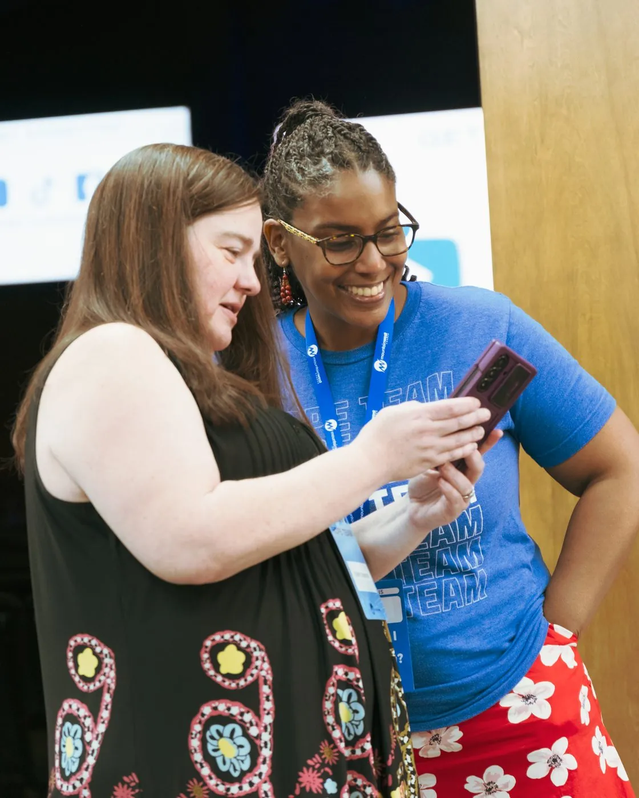

Home / About / Mission & Vision

Mission
The Hope Center exists to rebuild lives, reunite families, and remove barriers by providing practical support, guidance, and connections that lead individuals and families toward stability, dignity, and independence.
Vision
To become a trusted center in Tucker, GA where people find help, experience care, and take clear steps toward long-term stability and restored lives.
Why MW Hope Center.
Local focus in Tucker, GA
Partnership Model
Community-Driven
Radical Hospitality
People before the Mission
One setback shouldn't decide a family's future.
Families across DeKalb and Gwinnett County face growing pressure from rising costs, limited transportation, and fewer paths to long-term stability. Poverty continues to rise in several suburban neighborhoods, and many households now struggle to meet basic needs. The Hope Center is guided by strong values — we work to rebuild lives, restore families, and bring stability to those who need it most. Our desire is to offer a clear path toward dignity, independence, and lasting hope for every person we serve.
How we support the people we serve.
Jesus
We believe the hope and love of Jesus calls us to action.
Honesty
We speak and act with truth and transparency in all that we do.
Compassion
We meet people where they are with empathy, kindness, and genuine care.
Courage
We boldly step into hard places and difficult conversations to serve those in need.
Respect
We honor the dignity and worth of every person we encounter.
Self-Discipline
We hold ourselves to a high standard, modeling the consistency and integrity we encourage in others.
Hard Work
We give our best effort in every task, knowing that lives are changed through faithful, persistent service.
Four groups at the center of our work.
Single mothers & under-resourced families
Support for employment, life skills, housing stability, and dependable community networks.
Children with a parent in prison
Programs that offer support, encouragement, and positive role models.
Young adults aging out of foster care
Mentoring, character development, and practical life skills.
Returning citizens & their families
Discipleship and steady support through Spiritual Discipleship.